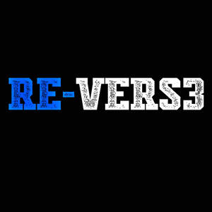

Trade Mark Journal No.2025/025 20 June 2025
UK00004216199 9 June 2025 (9)

RE-VERS3
- Class 9
- Podcasts; Downloadable podcasts; Videocasts; Downloadable videocasts; Audio tapes featuring music; Downloadable video recordings featuring music; Pre-recorded video tapes featuring music; Prerecorded audio tapes featuring music; Downloadable video recordings; Pre-recorded audio tapes featuring games; Pre-recorded audio cassettes featuring music; Audio recordings; Audio and video receivers; Audio books; Prerecorded video tapes featuring music; Video recordings; Prerecorded music audio tapes; Audio tapes; Audio speakers; Pre-recorded audio tapes; Pre-recorded video tapes featuring games; Video conference software; Prerecorded video cassettes featuring music; Prerecorded video cassettes featuring animated fictional stories; Speakers for video conferencing; Downloadable video game programs; Audio expanders; Pre-recorded video tapes; Video tapes; Prerecorded non-musical audio tapes; Blog software; Pre-recorded CDs featuring music; Pre-recorded audio cassettes; Musical video recordings; Prerecorded music videos; Recorded video tapes; Pre-recorded video cassette tapes; Video game cassettes; Digital music [downloadable] provided from mp3 web sites on the internet; Audio devices and radio receivers; Downloadable video game software; Digital audio tapes; Audio digital tapes; Downloadable music sound recordings; Video tapes with recorded animated cartoons; Downloadable videos; Audio tape players; Audio speakers for home; Tape recordings of music; Audio conference apparatus; Pre-recorded DVDs featuring music; Pre-recorded videos.
RE-VERS3 Ltd